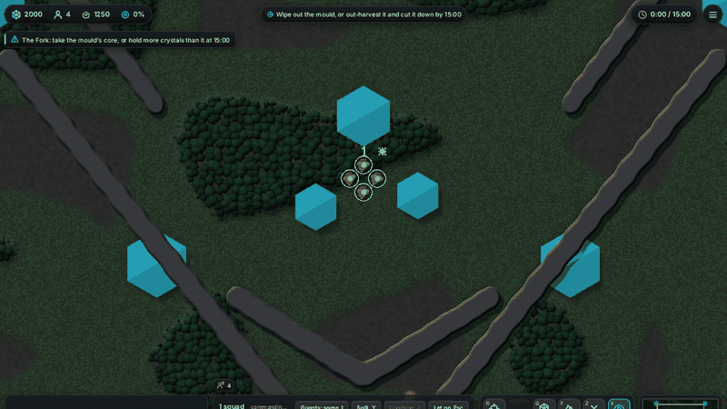

<title>Resume a Half-Built Building</title>
<meta name="claude:viewport-fit-sides" content="cover">
<link rel="stylesheet" href="https://fonts.googleapis.com/css2?family=Space+Grotesk:wght@500;700&family=Inter:wght@400;600&display=swap">
<style>
/* Layout: one column, the clip first, then what it shows and the counts. */
:root { --bg:#f3f5f2; --fg:#1b2420; --muted:#56635c; --line:#d5ddd8; --accent:#2f8a5c; --panel:#e8ede9;
  --display:"Space Grotesk",system-ui,sans-serif; --body:Inter,system-ui,sans-serif; }
@media (prefers-color-scheme: dark) { :root:not([data-theme="light"]) { --bg:#121815; --fg:#e4ebe6; --muted:#9aa8a0; --line:#2a3530; --accent:#6fcf9b; --panel:#1a221e; color-scheme:dark } }
:root[data-theme="dark"] { --bg:#121815; --fg:#e4ebe6; --muted:#9aa8a0; --line:#2a3530; --accent:#6fcf9b; --panel:#1a221e; color-scheme:dark }
body { background:var(--bg); color:var(--fg); font-family:var(--body); line-height:1.55;
  padding-left:max(16px, env(safe-area-inset-left, 0px)); padding-right:max(16px, env(safe-area-inset-right, 0px)); padding-block:28px 48px; }
main { max-width:800px; margin:0 auto; display:grid; gap:22px; }
h1,h2 { font-family:var(--display); text-wrap:balance; margin:0; }
h1 { font-size:1.9rem; } h2 { font-size:1.15rem; }
p, li { max-width:65ch; margin:0; }
ul { margin:0; padding-left:1.2em; display:grid; gap:6px; }
figure { margin:0; display:grid; gap:8px; }
figure img { width:100%; border-radius:6px; border:1px solid var(--line); }
figcaption { color:var(--muted); font-size:.9rem; }
.lede { color:var(--muted); }
table { border-collapse:collapse; font-variant-numeric:tabular-nums; width:100%; }
.tw { overflow-x:auto; }
td, th { text-align:left; padding:6px 10px; border-bottom:1px solid var(--line); }
th { font-weight:600; color:var(--muted); font-size:.85rem; letter-spacing:.03em; }
kbd { font-family:var(--body); font-size:.85em; background:var(--panel); border:1px solid var(--line); border-radius:4px; padding:0 5px; }
</style>
<main>
  <h1>Resume a half-built building</h1>
  <p class="lede">You asked: “If you start building something but have to stop you should just need to click again to get the squad to resume building.” Now a right click on the half-built building sends the controlled squad back to finish it. It isn't placed again and costs nothing more.</p>
  <figure>
    
    <figcaption>The Fork, squad mode, zoom 6, 0:00 to 0:14. The squad places a turret and raises it to 40%, then gets sent away. One right click on the turret brings it back, and the alert at the top left reads “Back to the turret (40% built)”. The squad finishes it.</figcaption>
  </figure>
  <div class="tw"><table>
    <tr><th>In the clip</th><th>Food in the bank</th><th>Buildings</th></tr>
    <tr><td>Start</td><td>2000</td><td>0</td></tr>
    <tr><td>Turret placed (paid at once)</td><td>1505</td><td>1</td></tr>
    <tr><td>Right click to resume</td><td>1522</td><td>1</td></tr>
    <tr><td>Turret stands</td><td>1539 (income only)</td><td>1</td></tr>
  </table></div>
  <h2>How to use it</h2>
  <ul>
    <li><kbd>Right click</kbd> a half-built building (it shows faint, with a progress bar) and the controlled squad goes back to raise it. <kbd>Shift</kbd> + right click queues it after the squad's current orders.</li>
    <li>Pressing the same build key again and clicking the half-built building does the same thing. For example <kbd>T</kbd> then a click on an unfinished turret, or the pump key on a crystal whose pump rig isn't finished. Before, that gave “Can't build there” or “The pump is still being built”.</li>
    <li><kbd>Ctrl</kbd> + right click on a crystal still drains it, even if a pump rig is going up on it.</li>
    <li>In the RTS round, a right click sends the selected soldiers back. If nobody is selected, the nearest free soldier goes.</li>
  </ul>
  <h2>Checks</h2>
  <p>A new window test raises a turret partway in squad mode and sends the squad away, and the turret stops rising. One right click puts every member back on that same turret, the bank and the building count stay the same, and the turret finishes. The turret card's click on a second unfinished turret does the same. The full test suite passes and clippy is clean. Frame cost is none, since this is one search per click.</p>
</main>
